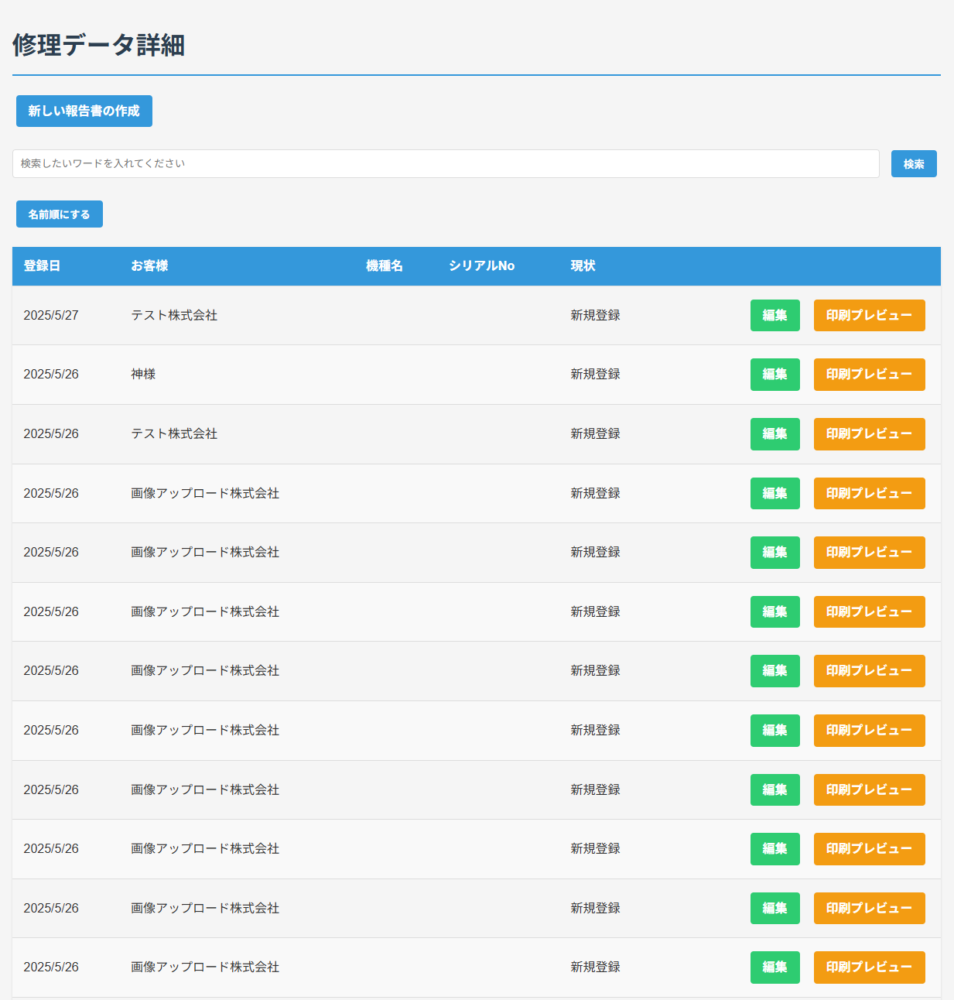
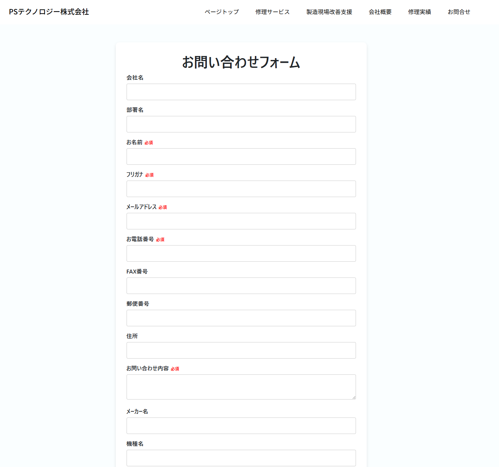
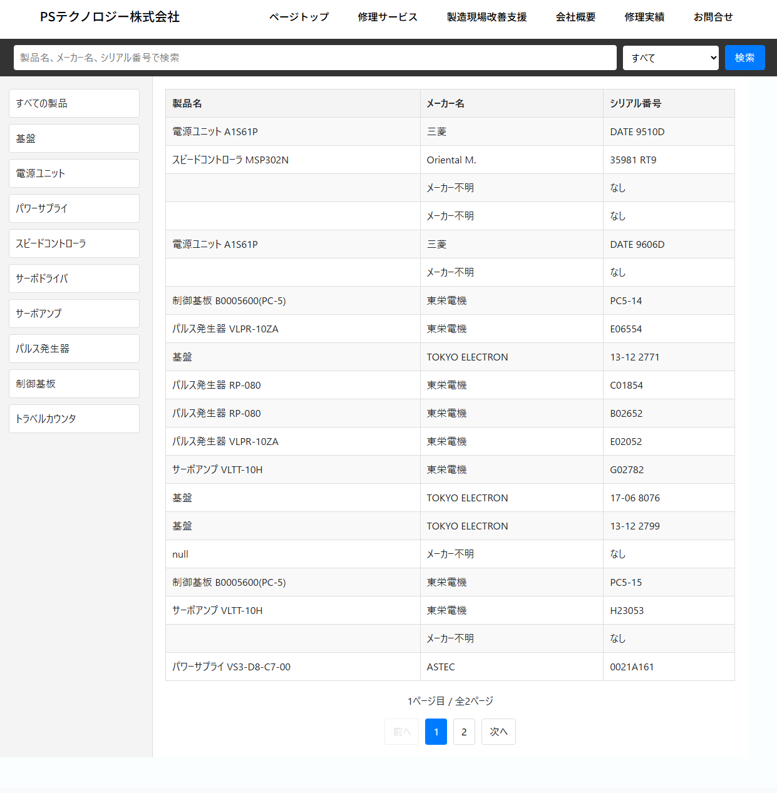

制作実績

ToDoリストアプリ
Laravel・Vite・MySQLを用いたタスク管理アプリ。CRUD、バリデーション、カテゴリ管理を実装。
Laravel MySQL Vite

社内ツール（React）
Reactで作成した社内向けツール。タスク管理やデータ表示を効率化しました。
React JavaScript

お問い合わせフォーム
HTML/CSS/JavaScriptとPHPで作成。バリデーションやメール送信機能を実装しました。
PHP JavaScript

ホームページ制作
シンプルで見やすい実績紹介用のホームページをHTML/CSSで制作しました。
HTML CSS